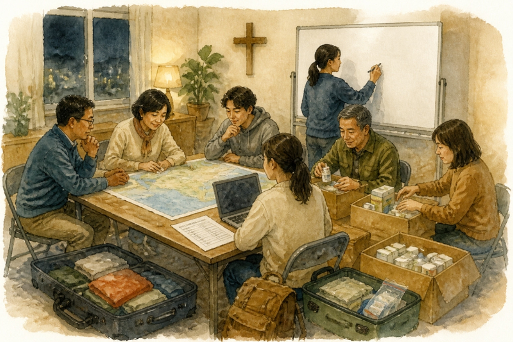
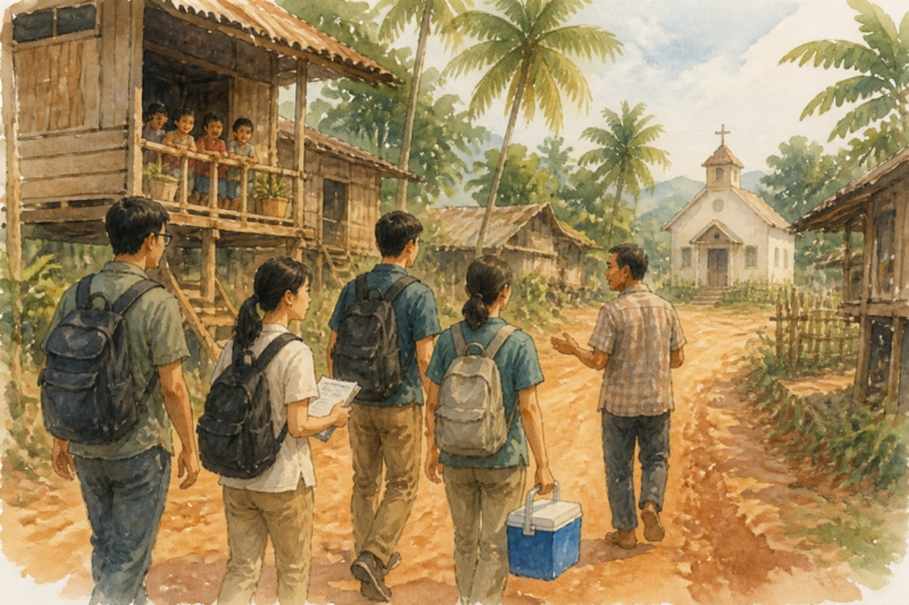
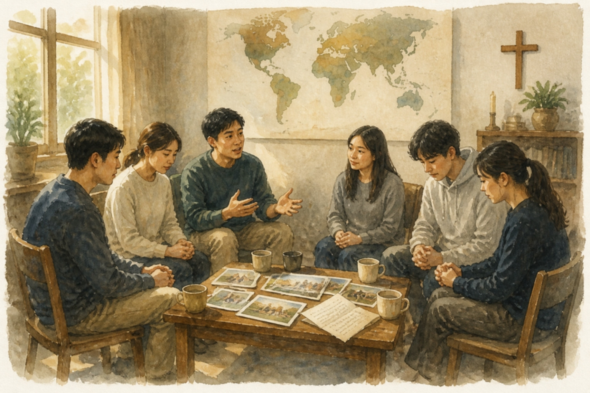

팀을 꾸려 다녀오고, 돌아오기까지
여러 교회와 단체에서 해 온 「단기선교 실무 가이드」 강의를 정리했습니다. 어느 교회나 팀이든 가져다 고쳐 쓰시면 됩니다.
목록은 길지만 전부 하라는 뜻이 아닙니다. 우리 팀에 해당하는 줄만 고르고 나머지는 지우십시오. 다만 지우기 전에 한 번은 읽으십시오. 빠뜨려서 생기는 사고가 대부분 「그런 게 있는 줄 몰랐다」에서 나옵니다.
목록 가운데 일부는 한국 교회에서 오래 쓰여 온 실무 자료에 뿌리를 두고 있고, 제가 현장에서 다듬은 것이 섞여 있습니다.
체크리스트보다 먼저 정해야 하는 것 두 가지.
현지인에게 하나님의 사랑을 전한다.
장기 선교사의 사역과 삶을 위로하고 실제 필요를 돕는다.
팀과 파송 교회가 하나님의 뜻을 발견하고 선교 중심의 삶으로 헌신한다.
이 셋이 모든 계획과 행동을 결정하는 기준입니다. 일정표의 한 칸, 예산의 한 줄을 넣을지 뺄지는 그것이 셋 중 무엇을 섬기는지로 정합니다.
주의셋째만 남으면 현지가 우리 성장의 배경이 됩니다. 세 목표의 받는 이가 서로 다르다는 것을 잊지 마십시오.
성공적인 단기선교는 비행기를 타고 떠나는 며칠간의 일회성 이벤트가 아닙니다.
여섯 달. 여기서 정해지는 것이 현지에서 할 수 있는 일의 범위를 이미 정합니다.

목회자와 평신도를 함께 세웁니다.
| 강점 | 약점 | |
|---|---|---|
| 목회자 팀장 | 이미 영적 지도력이 있다 | 여섯 달쯤 되는 준비 기간에 충실하기 어렵고, 임지를 옮기면 경험이 사라진다 |
| 평신도 팀장 | 준비를 감당할 수 있고 경험을 다음 팀에 넘기기 좋다 | 영적 돌봄에는 목회자가 필요하다 |
누구든 혼자 결정하다 보면 실수가 많습니다.
전부를 만족시킬 수는 없습니다. 잘 모르겠으면 「정해 주는 곳에 간다」고 결정해도 됩니다.
열둘 중 둘첫째, 소통이 잘 되는 곳. 현지 선교사를 신뢰할 수 있는 곳입니다.
둘째, 지속 가능성. 오래 다녀 보고 조사해 볼수록 한곳을 계속 가는 것이 가장 중요하다는 결론에 이릅니다. 단회로 그치면 아쉬움이 큽니다.
| 문서 | 누가 쓰나 | 무엇을 하나 |
|---|---|---|
| 파송요청서 | 현지 선교사 | 사역 내용과 필요한 인원·기술·재정을 적는다. 우리의 계획이 아니라 현장의 실제 필요에서 사역이 시작되게 하는 장치 |
| 협력동의서 | 양쪽이 서명 | 서로의 책임을 확인한다. 적으면 책임감이 서로 올라간다 |
요령이미 다니던 곳에도 요청서를 다시 받아 보십시오. 받아 보면 그 선교사가 어떻게 일하는지 대충 알 수 있고, 선교사 자신의 사역도 정리됩니다. 공식 문서를 만들수록 선교사도 성장합니다.
| 영역 | 물을 것 |
|---|---|
| 사역 | 현지에서 특별히 필요한 사역은? 어떤 전문 기술이 도움이? 얼마의 재정? 현지에서 조달할 도구나 물자는? 팀이 가져갈 물품은? 누가 감독할 것인가? 인부나 통역자의 임금은? |
| 시설 | 숙박시설? 침구? 목욕시설과 전기는? 팀 모임 장소는? 세탁시설은? |
| 식사 | 주방시설은? 현지 식당과 메뉴는? 매끼 비용은? 냉장고 유무? 간식과 과일은? |
| 교통 | 공항을 오갈 때? 식품·물품 구입 시? 사역지 이동 시? 관광할 때? 예상 비용은? |
| 봉사 | 정해진 사역 외에 우리 팀에게 바라는 다른 영역은? 현지 교회 예배에 어떤 형태로 참여하기 원하는가? |
| 여가 | 무엇을?(현지인과 축구·수영·해변) 추천 관광은? 귀국 시 추천 쇼핑 물품은? |
| 그 밖 | 문화·종교적 기준 · 비상시 · 기타 특이사항 |
주의「우리 팀에게 바라는 다른 영역은?」을 꼭 물으십시오. 선교사가 말하지 않은 필요가 거기서 나옵니다.
설계 원칙사역 중심에서 벗어나 관계 중심으로. 그리고 목표를 제시하십시오. 호감을 얻는 전 단계(Pre-faith)에 머물지 않도록 설계합니다. 최고의 사역은 화려한 프로그램이 아니라 관계에서 시작됩니다.
주의짧은 기간에 열매를 보려다 물량·경험·전시 중심으로 흐르기 쉽습니다. 참가자의 은사에서 출발하는 사역이 아니라 선교지의 필요에 맞춘 사역이어야 합니다.
참가 신청서로 신앙과 은사와 동기를 봅니다. 동기는 세 층입니다.
지원서에 적는 것
적지 않은 것
본인도 아직 모르는 것
청소년은 부모의 권유나 친구를 따라오는 경우가 많습니다. 팀장은 이 동기를 비판하거나 꾸짖지 말고 기도와 대화로 정리합니다.
어떤 동기도 하나님이 무시하시지 않습니다.
「그리스도 예수의 마음」(빌 2:5)을 품고 오는 사람은 잘 없지만, 그래도 하나님은 응답하십니다.
보낼 때는 안수하여 보냅니다. 그냥 보내는 것과 다릅니다.
아무도 빠지지 않게 나눕니다. 짐꾼부터 회계까지입니다.
팀장이 챙길 것 — 팀원 모집 · 참가신청서(동기 점검) · 선교사와 소통(사역·시설·식사·교통·숙박) · 역할 배분 · 기도편지 · 재정담당자(환전) · 항공권 · 보험 · 정보 관리
중심은 1박 2일 파송 수련회입니다.
| 영역 | 내용 |
|---|---|
| 영적 준비 | 집중 기도, 선교적 큐티 |
| 문화 이해 | 현지 언어와 역사, 영상·사진 자료 |
| 사역 준비 | 복음 제시 방법 만들기 |
| 팀 빌딩 | 공동체 훈련 |
실측1박짜리 팀빌딩 워크숍을 하면 정말 확 달라집니다. 그때부터 진짜 한 팀이 됩니다.
우리는 왜 성경을 놓고도 선교를 모를까. 선교의 책으로 성경을 다시 읽는 순서입니다.
| 주제 | 본문 |
|---|---|
| 선교의 책, 성경 | 눅 24:46-48 · 마 24:14 |
| 베드로 — 하나님의 선교 오리엔테이션 | 행 10장 |
| 아브라함과 선교 | 창 12:1-3 |
| 하나님의 영광과 선교 | 사 43:7, 21 |
| 출애굽과 선교 | 출 9:13-16 · 19:5-6 |
| 성전과 선교 | 왕상 8:41-43 · 사 56:7 · 막 11:17 |
| 솔로몬과 미전도 종족 입양 | 왕상 11:3 |
| 요나와 선교 · 바울과 선교 | — |
| 예수님의 이방인 사역 | 동방박사 · 백부장 · 가나안 여인 · 사마리아 |
| 예배와 선교 | 계 7:9-10 · 5:9-10 · 21~22장 |
조정기도편지는 겹치지 않게 다섯 사람쯤에게 보냅니다. 한 사람에게 여러 팀원이 몰리지 않게 조정하십시오.
개인 준비물 — 여권 · 성경 · 편한 신발 · 상비약 · 현지 복장(눈에 띄지 않는 것)
① 알파벳 ② 숫자 ③ 일반적인 인사말 ④ 가게에서 물건 살 때 ⑤ 길 묻는 말 ⑥ 대중교통 ⑦ 음식점 ⑧ 복음 제시에 필요한 성경구절 ⑨ 교회에서 쓸 간단한 말 ⑩ 현지어 찬양 ⑪ 공항 수속
가이드북에 넣고, 한국에서 현지인을 만나거나 현지 선교사를 초청해 배웁니다. 유튜브에도 기초 강의가 있습니다.
태도가 메시지입니다. 백 마디 말보다 태도가 강하게 전달됩니다.

| 안전수칙 9 | 건강지침 11 |
|---|---|
| ① 현지 선교사의 지시에 절대 복종 | ① 빡빡한 일정보다 휴식이 가능한 일정 |
| ② 팀장 허락 없이 개인행동 금지 | ② 끓인 물 혹은 병·캔에 든 음료만 |
| ③ 여행 중 가방은 반드시 팀원이 직접 지킨다 | ③ 얼음을 먹지 않는다 |
| ④ 언제라도 여권을 소지한 상태로 이동 | ④ 야외에서는 긴 옷으로 벌레·모기 피해를 줄인다 |
| ⑤ 촬영 금지 구역에서 촬영하지 않는다 | ⑤ 잘 익힌 음식을 먹는다 |
| ⑥ 현지 선교사의 허락 없이 개인적으로 구제하지 않는다 | ⑥ 야채와 날음식을 삼간다 |
| ⑦ 밤 시간 사역은 공개된 장소에서만 | ⑦ 앞창이 넓은 모자와 선글라스 |
| ⑧ 밤 시간 이동은 반드시 두 명 이상 | ⑧ 매일 운동 시간 |
| ⑨ 귀중품은 반드시 개인이 소지 | ⑨ 손을 잘 씻고 숙소를 깨끗이 |
| ⑩ 말라리아약은 빠뜨리지 않고 복용 | |
| ⑪ 껍질 있는 과일은 깎아서 |
왜 ⑥인가이것은 돈의 문제가 아니라 질서의 문제입니다. 돕고 싶은 마음이 현지의 질서를 건너뛰지 않게 하려는 것입니다. 4부의 재정 원칙과 짝입니다.
주의건강지침 ①이 첫 줄인 이유가 있습니다. 안전과 건강이 무너지면 일정 전체가 멈춥니다. 사역과 같은 무게로 다루십시오.
매일 — 선교적 큐티 모임 · 저녁 집회와 기도회 + 간단한 평가 · 선교사와의 교제 시간 · 팀원들 나눔의 시간
돌발 상황 — 여권 분실 · 아픈 팀원 · 팀 안에서 생기는 커플 · 위기 규칙 적용
문제는 당연히 생깁니다. 가장 큰 원인 둘은 짧은 준비 기간과 의사소통이 안 되는 것입니다. 대비는 넷입니다 — 리더십의 역할, 듀얼 리더십, 명확한 목표 설정, 소통 잘되는 리더.
위의 목록은 보내는 쪽이 만든 것입니다. 2010년대 이후 받는 쪽에 직접 물은 연구들이 나왔고, 그들이 말한 것을 더하지 않으면 이 매뉴얼은 반쪽입니다.
서아프리카의 한 나라에서 현지 의료인·행정가 24명을 면담한 2021년 연구에서, 그들은 고마움을 먼저 말했습니다. 가장 많이 든 유익이 환자 건강의 실제 개선이었습니다. 그리고 같은 입으로 어려움을 말했습니다.
| 그들이 꼽은 난점 | 우리가 할 일 |
|---|---|
| 언어 — 가장 많이 나왔다. 말이 통하지 않으니 환자와 두려움을 이야기하지 못한 채 「자르는 데에만 관심이 있다」 | 통역을 준비물 목록에 넣는다. 있으면 좋은 것이 아니라 필수 항목이다 |
| 현지의 지식과 전문성을 무시하는 태도 | 가기 전에 그 나라의 같은 분야 전문가에게 먼저 연락해 본다 |
| 팀을 맞는 숙식·교통 부담이 수용 기관에 떨어진다 | 그 비용을 우리가 진다. 질문지의 「예상 비용은?」을 반드시 묻는다 |
| 상의 없이 보내진 물품 | 보내기 전에 묻는다 |
| 자격 문제 — 전문의라며 왔는데 학생이었다 | 누가 무엇을 할 수 있는지 미리 정확히 알린다 |
다른 세 나라에서 118명에게 물었을 때, 팀원이 갖출 것 가운데 가장 중요하다고 꼽힌 것은 이것이었습니다.
현지 의료인과 짝을 이루는 것.
그리고 받는 쪽의 요구를 모으면 네 마디로 줄어듭니다.
읽는 법이것은 거절이 아니라 더 나은 동역에 대한 초대입니다. 그들은 감사부터 말했습니다.
단기선교의 진정한 열매는 귀국 후에 맺힙니다. 이 단계가 사실상 가장 중요합니다.

거기서 끝나는 것이 아니라 거기서 시작합니다. 포스트필드를 하지 않으면 비용 대비 효과가 가장 나쁜 행사가 됩니다.
누가복음 10장에서 칠십 인이 돌아와 「귀신들도 항복하더이다」 하며 들떠 있을 때, 예수께서는 더 하라가 아니라 쉬게 하셨습니다.
다녀오면 마음이 뜨거워져서 다녀오지 않은 사람들이 문제인 것처럼 보이기 쉽습니다. 그래서 돌아온 직후의 디브리핑은 식히는 시간입니다. 그렇다고 아주 식으면 안 됩니다.
선교지에서 환자를 잘 보았으면 내 진료실에서도 환자를 잘 보아야 합니다.
마음이 거기 머물러 있어도 안 되고, 완전히 식어도 안 됩니다.
한 번만, 냉정하게. 그리고 전부 공개할 필요는 없습니다.
그런데평가의 핵심은 두 질문입니다. ① 다시 가려는 사람이 있는가. ② 못 가는 사람은 누군가를 추천하거나 보내는가.
아르바이트를 해서 백만 원을 후원하는 사람이 나올 만큼 누군가의 인생이 바뀌었다면, 그것이 진짜 평가 점수입니다.
민수기 13장의 열두 정탐꾼은 같은 것을 보고 왔는데 여호수아와 갈렙의 보고만 달랐습니다. 그렇다면 무엇을 보고 오라고 미리 가르쳤습니까. 목표를 정해 주지 않으면 각자 보고 싶은 것만 보고 옵니다.
「환자 몇 명 보았습니다, 행사에 몇 명 동원되었습니다」는 하지 말아야 할 보고입니다.
하나님이 그곳에서 무엇을 하고 계신지, 어떤 필요와 어떤 잃어버린 사람과 어떤 하나님 나라가 보였는지를 사역보다 먼저 보고 와야 합니다.
| 보고 요령 5 | 흔한 실수 6 |
|---|---|
| ① 가능하면 시각 자료를 쓴다 | 팀이 발표에 너무 많이 기댄다 |
| ② 짧게 하고 요점을 분명히 | 슬라이드는 너무 많고 영상은 편집되지 않았다 |
| ③ 삶의 변화에 초점을 맞춘다 | 너무 팀에게만 맞춰져 있고 청중을 고려하지 않았다 |
| ④ 갈 수 있었던 것에 대한 감사를 전한다 | 현지 문화를 비판하기만 했다 |
| ⑤ 설교하지 않는다 | 우리나라 기독교에 대해 너무 비판적이었다 |
| 말만 많고 행동은 적었다 |
영상도 3분을 넘어가면 안 간 사람들은 지겹습니다.
기록보다 위대한 기억력은 없습니다.
애프터 모임은 자체 평가회와 성격이 완전히 다릅니다. 먹고 이야기하며 선교지를 떠올리고, 서로의 성장을 살피고, 기도합니다. 현지 장기 선교사를 위한 기도를 이어 가고, 선교사가 귀국하면 초대해 관계를 잇습니다.
| 할 일 | 왜 |
|---|---|
| 일상선교로 옮기기 | 이것을 목표로 하지 않으면 비용 대비 효과가 가장 나쁜 행사가 된다 |
| 목양 | 한두 주를 하루 종일 붙어 있으면 선교보다 목양의 필요가 더 크다는 것이 보인다 |
| 헌신자 살피기 | 소수의 헌신자가 나타난다. 냉정하게 점검받게 하고 그 열정은 살려 준다 — 교회가 인정하는 단체로 연결하고 멘토링으로 잇는다 |
| 사후 바자회 | 사전 바자회가 우리 팀을 위한 것이라면, 사후 바자회는 현지의 필요를 위한 것이다 |
| 기념품 | 단기팀과 후원자를 위한 선물 |
| 평상시 훈련 | 제자훈련과 선교훈련은 따로가 아니다. 예수께서 예루살렘이 아니라 갈릴리에서 가르치신 것은 그곳이 타문화에 닿아 있었기 때문이다 |
핵심관계는 현지에서 쌓이는 것이 아니라 그 사이에 유지되는 것입니다. 그리고 단기팀에 왔다가 선교사가 되는 사람은 현지에서가 아니라 돌아온 뒤의 열한 달 동안 자랍니다.
돈이 지나간 길은 관계가 지나간 길이기도 합니다.
① 항공권 ② 비자 발급 ③ 공항세 ④ 국내 교통비 ⑤ 여행보험료 ⑥ 선교지 사역비(예비비·교통비·식대·숙소·현지 동역자를 위한 비용) ⑦ 선교사를 위한 지원 ⑧ 귀국 후 선교 보고 관련 비용 ⑨ 현지인 교회 헌금 ⑩ 팀 운영 사무비 ⑪ 예방접종 ⑫ 비상약품 ⑬ 비상금·기타
모금하는 것은 신중하게.
| 가급적 공동 모금으로 | 피할 것 |
|---|---|
| 바자회 · 벼룩시장 · 음악회 | 지인을 찾아다니며 후원 부탁 |
| 부서별 한 끼 금식 후원 | 한 사람에게 여러 명이 요청 |
| 물건 강매 |
필수현지인과 현지 교회를 도울 돈은 반드시 장기 선교사를 통해 전달합니다.
현지의 영적 질서를 지키기 위해서입니다. 2부 안전수칙 ⑥(개인적 구제 금지)과 같은 원칙입니다. 우리가 직접 주면 그 순간은 좋지만, 떠난 뒤에 남는 관계를 망가뜨립니다.
| 사역지 | 품목 |
|---|---|
| 인도차이나 A국 | 아이들 신발 |
| 동아시아 B국 | 고급 치약 |
| 유럽 C국 | 커피 |
| 아시아 D국 | 한국 월간 잡지 |
| 아시아 P국 | 복사 용지와 프린터(컬러) 용지 |
핵심짐작하지 말고 물으십시오. 목록이 이렇게 제각각인 이유가 그것입니다.
강의 때마다 질문으로 나온 것들입니다. 정답이 없는 것이 많아 판단의 기준만 적습니다.
막지 않되 팀의 성격을 먼저 솔직히 알립니다. 매일 큐티와 기도회가 있고 복음을 전하러 간다는 것을 알고 오게 합니다. 오히려 그 사람에게 이 여정이 가장 큰 사건이 되기도 합니다.
현지 선교사에게 먼저 묻습니다. 숙소·안전·일정이 전부 달라집니다. 선교사 자녀(MK)와의 만남이 좋은 사역이 되는 경우도 있습니다.
개별 입출국은 안전 수칙과 충돌합니다. 꼭 필요하면 공항 이동과 책임 소재를 문서로 정해 둡니다.
넣습니다. 다만 선교사에게 추천을 받아 넣습니다(질문지의 「여가」). 현지 문화를 접하는 시간이 되게 하고, 쇼핑 시간과 한도를 미리 안내합니다.
단체 발권 조건, 수하물 규정(의약품·장비), 경유지 환승 시간, 여권 유효기간 6개월을 확인합니다.
공동 물품을 먼저 나누고 개인 짐을 줄입니다. 통기타처럼 부피 큰 공동 물품은 담당을 정합니다. 여권과 항공권은 스캔해 둡니다.
1부의 11가지면 충분합니다. 완벽하게 하려다 아무것도 못 하는 것보다 서툴게 인사하는 편이 낫습니다.
이 매뉴얼의 뼈대는 2017년에 정리한 것입니다. 그 뒤 바뀐 것이 있고, 그것을 넣지 않으면 오늘 쓸 수 없습니다. 특히 의료팀이라면 이 장을 먼저 읽으십시오.
현지 의료가 자랐습니다. 저·중소득국 정부는 보건 투자를 늘리고 있고, 정부 간 원조와 대형 민간 재단의 기부가 수십억 달러 규모로 들어갑니다. 그 결과로 외국 팀이 와서 하는 일회성 진료가 불법 의료 행위가 되는 지역이 늘었습니다. 그리고 의료선교 문헌은 이것을 긍정적 현상으로 봅니다 — 그 나라가 자기 국민의 진료를 자기 손으로 관리하게 되었다는 뜻이기 때문입니다.
허가를 받고 서류와 시간을 들이면 가능합니다.
어려워서가 아니라, 방법을 몰라서 시도하지 않는 것이 문제입니다.
합법은 기도 제목이 아니라 당연한 준비입니다.
실제로한 단체의 몽골 사역에서 단기팀의 의료행위에 대해 현지 의료인이 문제를 제기했고, 언론과 보건당국이 움직여 협력하던 선교병원이 허가 취소 위기를 겪었습니다. 대응과 신뢰 회복의 책임은 떠난 팀이 아니라 현지 병원과 공동체에 남았습니다.
그러므로매뉴얼의 한 줄이 바뀝니다. 우리 진료실에서 하지 않을 진료를 그곳에서 하지 않습니다. 그곳의 몸도 똑같이 하나님이 지으시고 그리스도가 입으신 몸이기 때문입니다.
| 과거 | → | 지금 |
|---|---|---|
| 일회성 진료 | → | 지속적 관계 |
| 의료 제공 | → | 역량 강화 |
| 외부 주도 | → | 현지 주도 |
| 치료 중심 | → | 예방·지역보건 |
| 환자 수 | → | 건강 결과 |
| 방문 중심 | → | 동반자 선교 |
그리고 첫 줄에 지표를 붙였습니다 — 진료 인원만 세지 않고 재방문 · 교육 지속 · 의뢰체계 · 지역문제 해결 여부를 봅니다.
사역지를 지역이 아니라 「물 줄 사람이 누구인가」로 나누는 방식이 있습니다. 고린도전서 3장 6절 — 심는 사람은 단기팀, 물 주는 사람은 남는 사람, 자라게 하시는 분은 하나님.
| 유형 | 물 주는 사람 |
|---|---|
| ① 교회 개척 동역형 | 선교사 |
| ② 현지 교회 성장 동역형 | 선교사와 현지 교회 |
| ③ 진료 중심형 | 아직 연결을 만드는 중 |
| ④ 이양·종료형 | 현지 사역자 — 팀과 선교사는 물러나 다른 곳으로 |
핵심어디로 갈지는 「물 줄 사람이 있는지」로 가늠합니다. 그리고 ④가 목록에 있다는 것이 중요합니다. 끝내는 것을 실패가 아니라 유형의 하나로 적어 두십시오.
긴 체크리스트를 다 할 수 없다면, 이 다섯만 답해 보십시오. ①~④는 선한 사마리아인의 비유(눅 10:30-37)에서 그대로 나옵니다 — 현장에서의 최선, 이송, 주막에 맡김, 그리고 「돌아올 때에 갚으리라」.
핵심이 물음에 답하지 못한다면, 그 해에는 가지 않는 것도 하나의 답입니다. 가지 않는 해는 그 물음에 답할 수 있도록 관계를 쌓는 해가 될 수 있습니다.
| 시기 | 할 일 |
|---|---|
| D-6개월 | 팀장 세우기(목회자+평신도) · 선교지 결정 · 파송요청서 받기 |
| D-5개월 | 협력동의서 · 팀원 모집과 참가신청서 · 역할 배분 |
| D-4개월 | 선교사 확인사항 15가지 · 사역 설계 · 예산 수립 |
| D-3개월 | 진료 허가·비자 신청(나라에 따라 더 일찍) · 항공권 · 보험 |
| D-2개월 | 1박 2일 파송 수련회 · 기도편지 배포 · 예방접종 |
| D-1개월 | 정기 기도회 · 복음 제시 연습 · 물품 구매와 통관 준비 |
| D-1주 | 출발 전 체크리스트 · 짐 분담 · 환전 |
| 현지 | 1~2주 |
| D+1주 | 디브리핑(식히는 시간) · 재정 결산 |
| D+2~4주 | 자체 평가회(닫힌 자리) · 선교 보고회 |
| D+2개월 | 자료집 발간 |
| 그 뒤 열한 달 | 애프터 모임(달마다) · 일상선교 · 헌신자 멘토링 · 사후 바자회 · 평상시 훈련 |
모두 만들어 두었습니다. 보기로 열어 빈칸에 바로 적고 인쇄하거나, Word로 받아 「○○교회」를 우리 교회 이름으로 바꿔 쓰십시오.
핵심서식을 만들어 두는 것이 가장 값싼 지속성입니다. 한 교회는 매뉴얼화의 이유를 이렇게 적었습니다 — 「주도하는 사람이 바뀌어도 같은 품질의 사역을 유지할 수 있게 된다.」